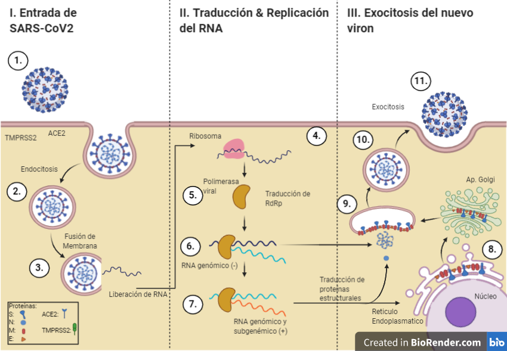

Para que el virus complete la entrada en la célula hospedera, la proteína (S) debe ser cortada o escindida por una enzima proteasa (TMPRRS2). La escisión de la proteína (S) ocurre en 2 diferentes posiciones de la subunidad S2, esto contribuye a la separación de la unión RBD de la subunidad S1 con el receptor ACE 2 (Ali et al.; Mousavizadeh & Ghasemi).
La unión de SARS-CoV-2 con su receptor ocasiona que se produzca endocitosis del virus y su posterior internalización al citoplasma celular.
La nucleocápside del virus se libera y permite la salida del RNA genómico viral (monocatenario de sentido +)(Pastrian et al.).
La secuencia de RNA viral actúa como un RNAm que se traduce en las poliproteínas pp1a y pp1ab (Mousavizadeh & Ghasemi), las cuales son procesadas proteolíticamente por enzimas proteasas como quimiotripsina codificada viralmente (3CLpro), proteasa principal (Mpro) y una o dos proteasas similares a la papaína (Chen et al.), lo que da lugar a la producción de las 16 proteínas no estructurales (nsps) designadas nsp1 a nsp16 (Sin-Yee et al.). Estas proteínas son necesarias para formar el llamado complejo replicasa transcriptasa (RTC), el cual, es ensamblado en vesículas de doble membrana originadas a partir del retículo endoplasmático (RE) (YanRong et al.; Mousavizadeh & Ghasemi).
La mayoría de las nsps están implicadas en la replicación y transcripción genómica del virus ejerciendo actividades enzimáticas de tipo proteasa, RNA polimerasa dependiente de RNA (RdRp), helicasa, exorribonucleasa, endorribonucleasa y metiltransferasa (Rokni et al.; Dae-Gyun et al.; Chen et al.; Qingmei et al.). El complejo (RTC) replica y sintetiza un conjunto de RNAm subgenómicos (sgRNA) (Rokni et al.; Dae-Gyun et al.; Chen et al.; Qingmei et al.), que codifican para la elaboración de las proteínas estructurales principales (S), (M), (E), (N) y para las proteínas accesorias (hacia el extremo 3’) (Yan-Rong et al.; Mousavizadeh & Ghasemi).
En la replicación de los CoV como SARS-CoV-2, el RNA monocatenario de polaridad positiva (+ssRNA) sirve de molde para sintetizar, inicialmente, una copia a de RNA monocatenario de polaridad negativa (-ssRNA) (Li et al., 2020a,b).
A partir de la copia de -ssRNA, se producirán las poliproteínas pp1a y pp1ab, las cuales, se procesarán y conformarán el complejo RTC (Rokni et al.; Yan-Rong et al.; Mousavizadeh & Ghasemi). El complejo RTC, gracias a su actividad enzimática replicativa, crea nuevamente una copia del genoma +ssRNA original del virus a partir del molde de -ssRNA.
El RNA genómico viral recientemente sintetizado, se asocia con la proteína (N) formando la nucleocápside. Las proteínas estructurales (S), (M) y (E) y las proteínas accesorias son elaboradas en las membranas del retículo endoplasmático (RE), posteriormente trasportadas al complejo de Golgi donde serán ensambladas junto con la nucleocápside para producir nuevas partículas víricas (Yan-Rong et al.).
Los nuevos viriones serán exportados hacia la membrana plasmática celular embebidos por vesículas.
Un proceso de exocitosis ocasionará la liberación del virus y éste será capaz de ir e infectar a otras células de la misma manera, repitiéndose el ciclo viral (Yan-Rong et al.).
*La presencia de errores de la RdRp durante la replicación de la cadena de RNA podría generar material genético no precisamente idéntico al del virus.
Si quieres saber más sobre la relación entre proteínas y virus, no dudes visitar: https://alejandrord98.github.io/NetworkBiology-C18/
1. Ali, R.; Shamsah, A.; Shafiul, H.; Ranjit, S.; Ruchi, T.; Yashpal, M.; Kuldeep, D.; Iqbal, Y.; Bonilla-Aldana, K. & Rodríguez-Morales, A. SARS-CoV-2, SARS-CoV, and MERS-CoV: a comparative overview. Infez. Med., 2:174-84, 2020.
2. Mousavizadeh, L. & Ghasemi, S. Genotype and phenotype of COVID-19: Their roles in pathogenesis. Mousavizadeh L, Ghasemi S, Genotype and phenotype of COVID-19: Their roles in pathogenesis. J. Microbiol. Immunol. Infec., 2020. DOI: https://www.doi.org/10.1016/j.jmii.2020.03.022
3. Pastrian-Soto, Gabriel. (2020). Bases Genéticas y Moleculares del COVID-19 (SARS-CoV-2). Mecanismos de Patogénesis y de Respuesta Inmune. International journal of odontostomatology, 14(3), 331-337. https://dx.doi.org/10.4067/S0718-381X2020000300331
4. Chen, Y.; Liu, Q. & Guo, D. Emerging coronaviruses: Genome structure, replication, and pathogenesis. J. Med. Virol., 92:41823, 2020.
5. Sin-Yee, F.; Kit-San, Y.; Zi-Wei, Y.; Chi-Ping, C. & Dong-Yan, J. A tug-of-war between severe acute respiratory syndrome coronavirus 2 and host antiviral defence: lessons from other pathogenic viruses. Emerg. Microb. Infect., 9:1558-70, 2020.
6. Yan-Rong, G.; Qing-Dong, C.; Zhong-Si, H.; Yuan-Yang, T.; ShouDeng, C.; Hong-Jun, J.; Kai-Sen, T.; De-Yun, W. & Yan, Y. The origin, transmission and clinical therapies on coronavirus disease 2019 (COVID 19) outbreak - an update on the status. Mil. Med. Res., 7:11, 2020.
7. Rokni, M.; Ghasemi, V. & Tavakoli, Z. Immune responses and pathogenesis of SARS-CoV-2 during an outbreak in Iran: Comparison with SARS and MERS. Rev. Med. Virol., 1-6, 2020
8. Dae-Gyun, A.; Hye-Jin, S.; Mi-Hwa, K.; Sunhee, L.; Hae-Soo, K.; Jinjong, M.; Bum-Tae, K. & Seong-Jun, K. Current Status of Epidemiology, Diagnosis, Therapeutics, and Vaccines for Novel Coronavirus Disease 2019 (COVID-19). J. Microbiol. Biotechnol., 30(3):313-24, 2020.
9. Qingmei, H.; Qingqing, L.; Shenhe J. & Liangshun, Y. Coronavirus 2019-nCoV: A brief perspective from the front line. J. Infect., 80:373-7, 2020.